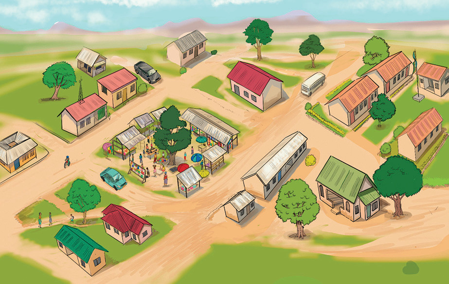

Zoezi la tatu
Chunguza picha kisha jibu maswali yanayofuata.

Maswali
1.Kati ya posta na gulio, kipi kipo karibu na shule?
2.Kati ya posta na gari jeusi barabarani, ni kipi kipo karibu na shule?
3.Kati ya gulio na shule, ni kipi kipo karibu na posta?
4.Kati ya posta na shule, ni kipi kipo mbali na gulio?
5.Kati ya gulio na gari jeupe barabarani, ni kipi kipo karibu na posta?